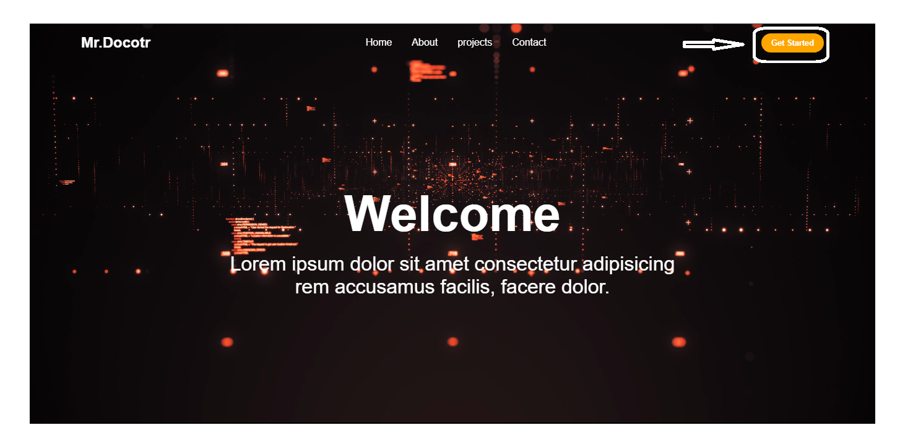

About
On this site you can use artificial
intelligence in the field of
medicine.
From the start section, you can use the site's
artificial intelligence.
You can diagnose lung
cancer and brain tumor using two medical projects.
You can choose a CT scan photo of the lung or brain
and use the registration button
to find out the type
of brain tumor or lung cancer.
